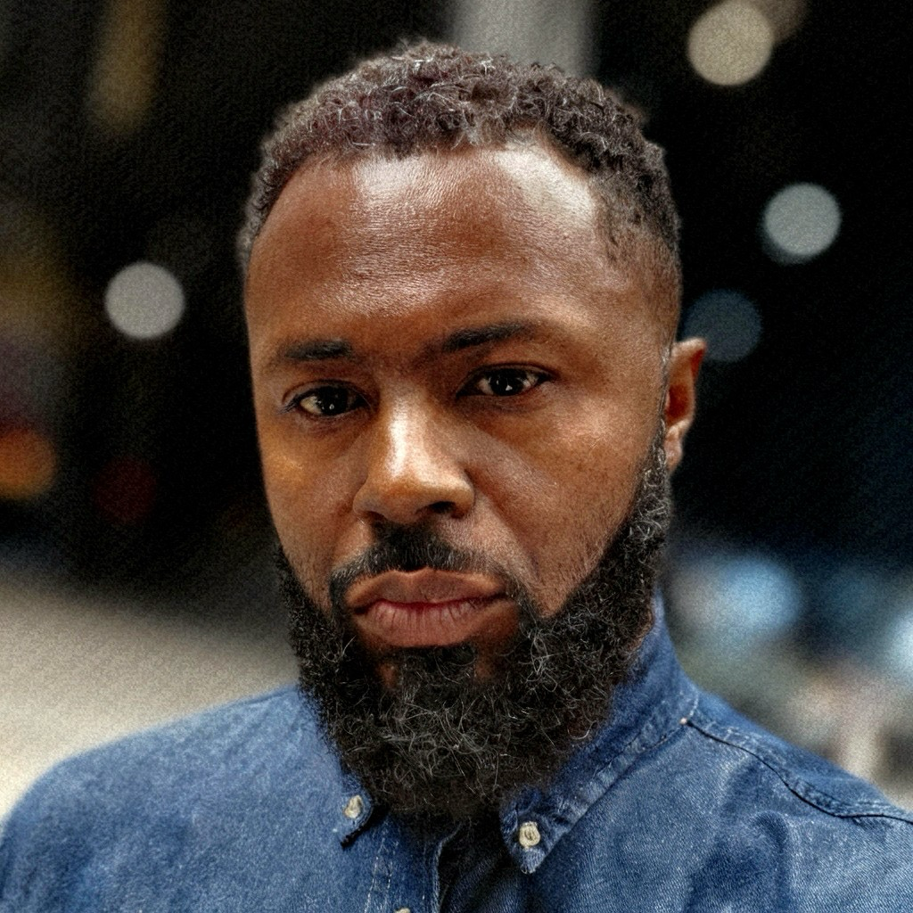
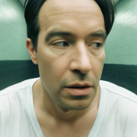

11 world-class creators, filmmakers, and technologists shaping the future of AI-powered storytelling. Season 1.
Enter the Competition →Founder, CGA Creative
Emmy-winning producer and Creative AI leader who helps organizations navigate the future of storytelling. With over two decades in television and media production, he specializes in blending cinematic craft with generative AI.
Founder/EP, Celestine Pictures
First-generation Chinese American screenwriter and producer. Recognized by Austin Film Festival and Humanitas. Founded an AI-native, IP-driven microdrama studio with series reaching 3M+ views.
AI+XR Artist · Harvard/MIT Researcher · Cofounder, MYStudio
Forbes China 100 Most Influential. Lumen Prize and ACM Multimedia award winner. Exhibited at Venice Biennale and Ars Electronica. Committee Chair of Global AI Film Hack@MIT.
Cofounder, Machine Cinema & Fantastic Day
Entrepreneur, filmmaker, and speaker at the forefront of AI-native storytelling. Creator Partner for Google Labs, Sora, ChatGPT 4o Image, Pika, and Luma Dream Machine. Former VC, journalist, teacher.
Creative Director, Seattle AI Film Festival + Culture & Code Podcast
Leading the conversation at the intersection of AI, culture, and creative expression through one of the premier AI film festivals and his influential podcast.
President & Creative Director, Alex Lang Media
60+ industry awards including Clio and Webby. Led iconic campaigns for Disney, Pixar, and Fox. His film "Calling Andy" won Best of Festival at the 2025 Hollywood Screenings Film Festival.

Founder, 13 Layers
25+ years supporting global brands like Intel, Samsung, and Google. From the SF Olympic Bid to Google Doodle, Paul bridges traditional illustration with AI-driven narrative design.
Emmy-Nominated Filmmaker · AI Production Architect
20-year legacy at Warner Bros., Disney, and Netflix. Now pioneering AI-augmented production pipelines with tools like Veo, Kling, and ComfyUI. His philosophy: technology must always serve the story.

Emmy-Recognized VFX Lead · Pioneer of Generative Cinema
Two-time VES Award nominee. 8 years at Barnstorm VFX. Now directs films created entirely with AI tools while bridging traditional Hollywood artistry with frontier generative technology.
Founder, Atomic Tango · Professor, USC Annenberg
25+ years in digital media strategy. Shapes branding for major global entities. At USC Annenberg, he specializes in entrepreneurial journalism and evaluating the intersection of storytelling and emerging technology.
Producer · Creative Executive · Professor, USC Annenberg
Veteran producer behind VIKINGS, HAVEN, and CLEVERMAN. Head of scripted programming at The History Channel. Harvard and USC alumnus. Co-founder of Harvardwood (10,000+ members). Lifelong sinophile.